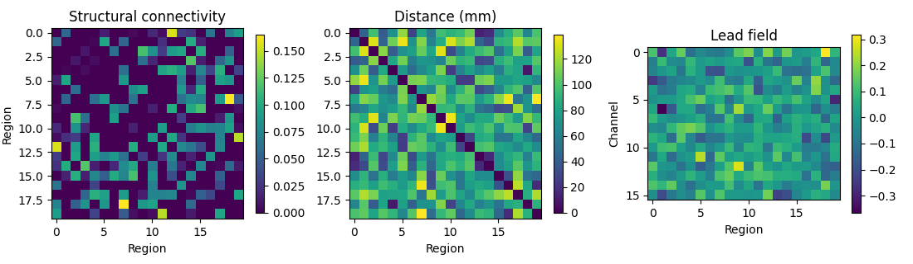
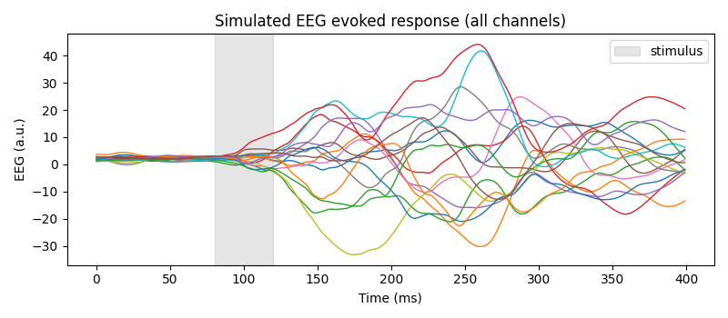
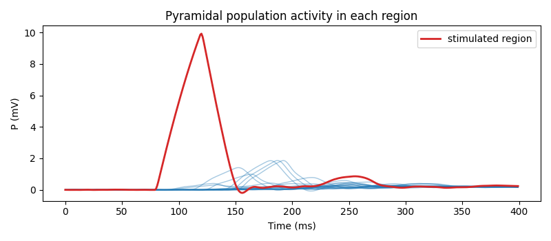
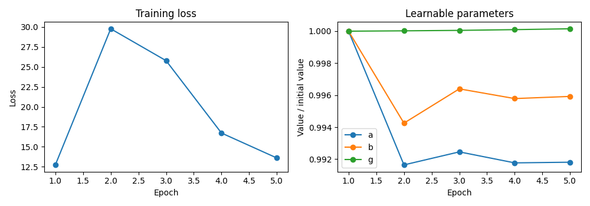
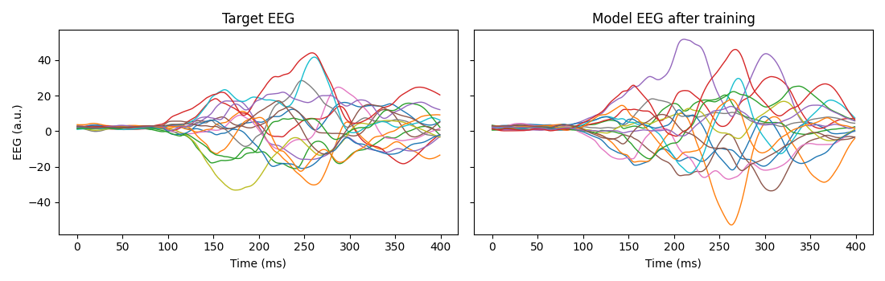

Note
Go to the end to download the full example code or to run this example in your browser via Binder.
Getting started: simulate and fit a whole-brain model#
This tutorial walks through the core WhoBPyT workflow on a small toy network, so it runs in a minute or two on a laptop CPU and needs no data downloads.
You will:
build a toy connectome (structural connectivity, distances, and a lead field),
define Jansen-Rit neural mass model parameters, including which ones are learnable,
simulate a stimulus-evoked EEG response, and
fit a model to that EEG response using gradient descent.
The same steps, applied to real TMS-EEG data, are shown in Modelling TMS-EEG evoked responses and in the paper replications in the examples gallery.
Imports#
The pieces you need from WhoBPyT are:
Parameterfor defining model parameters and their priors,Timeseriesfor holding empirical (or simulated) recordings,JansenRitModeland its parameter containerJansenRitParams,a cost function, here
CostsJR, andModelFitting, which runs the simulation and training loops.
import numpy as np
import torch
import matplotlib.pyplot as plt
from whobpyt.datatypes import Parameter as par, Timeseries
from whobpyt.models.jansen_rit import JansenRitModel, JansenRitParams
from whobpyt.optimization.custom_cost_JR import CostsJR
from whobpyt.run import ModelFitting
# Make the tutorial reproducible
rng = np.random.default_rng(42)
np.random.seed(42)
torch.manual_seed(42)
1. Build a toy connectome#
A whole-brain model needs:
a structural connectivity (SC) matrix, which sets the connection strength between brain regions (nodes),
a distance matrix, which sets the conduction delays between regions,
a lead field matrix, which maps region (source) activity onto EEG channels.
In real analyses these come from diffusion MRI tractography, a brain parcellation, and an EEG head model. Here we make random ones.
n_nodes = 20 # number of brain regions
n_chans = 16 # number of EEG channels
# Random region coordinates (mm) -> Euclidean distance matrix
coords = rng.uniform(-60, 60, size=(n_nodes, 3))
dist = np.linalg.norm(coords[:, None, :] - coords[None, :, :], axis=-1)
# Sparse, symmetric, log-scaled and normalized SC matrix
sc = rng.random((n_nodes, n_nodes)) * (rng.random((n_nodes, n_nodes)) < 0.3)
sc = (sc + sc.T) / 2
np.fill_diagonal(sc, 0)
sc = np.log1p(sc) / np.linalg.norm(np.log1p(sc))
# Random lead field (channels x regions)
lm = rng.normal(0, 0.1, size=(n_chans, n_nodes))
fig, axs = plt.subplots(1, 3, figsize=(11, 3.2))
for ax, mat, title in zip(axs, [sc, dist, lm],
['Structural connectivity', 'Distance (mm)',
'Lead field']):
im = ax.imshow(mat, cmap='viridis')
ax.set_title(title)
fig.colorbar(im, ax=ax, shrink=0.8)
axs[0].set_xlabel('Region'); axs[0].set_ylabel('Region')
axs[1].set_xlabel('Region')
axs[2].set_xlabel('Region'); axs[2].set_ylabel('Channel')
fig.tight_layout()

2. Define the model parameters#
Every model parameter is a Parameter.
Its arguments are par(value, prior_mean, prior_std, fit_par, asLog):
par(3.25)is a fixed parameter.par(100, 100, 2, True)is a learnable parameter with a Gaussian prior (mean 100, standard deviation 2). Its starting value is drawn from the prior.asLog=Truestores the log of the value so that it stays positive.
ki sets which regions receive the external stimulus; here only
region 0 is stimulated.
ki0 = np.zeros((n_nodes, 1))
ki0[0] = 1
def make_params():
"""Jansen-Rit parameters with priors (same settings as the TMS-EEG example)."""
return JansenRitParams(
A=par(3.25), a=par(100, 100, 2, True),
B=par(22), b=par(50, 50, 1, True),
g=par(500, 500, 2, True), g_f=par(10, 10, 1, True), g_b=par(10, 10, 1, True),
c1=par(135, 135, 1, True), c2=par(135 * 0.8, 135 * 0.8, 1, True),
c3=par(135 * 0.25, 135 * 0.25, 1, True), c4=par(135 * 0.25, 135 * 0.25, 1, True),
std_in=par(np.log(10), np.log(10), .1, True, True),
vmax=par(5), v0=par(6), r=par(0.56),
y0=par(-2, -2, 1 / 4, True),
mu=par(np.log(1.5), np.log(1.5), .1, True, True, lb=0.1),
k=par(5., 5., 0.2, True, lb=1), k0=par(0),
cy0=par(50, 50, 1, True),
ki=par(ki0),
lm=par(lm, lm, np.ones((n_chans, n_nodes)), True),
)
3. Create the model and simulate an evoked response#
The model integrates the neural mass equations with a step of
step_size seconds and outputs EEG every tr seconds. Simulation and
training run in windows of TRs_per_window output samples.
The stimulus u has shape (regions, integration steps per sample,
samples). We deliver a brief pulse 80-120 ms into a 400 ms epoch.
step_size = 0.0001 # integration step (s)
tr = 0.001 # output sampling interval (s), i.e. 1000 Hz
TRs_per_window = 20 # output samples per window
n_samples = 400 # 400 ms epoch
steps_per_sample = int(tr / step_size)
def make_model():
return JansenRitModel(make_params(), node_size=n_nodes,
TRs_per_window=TRs_per_window, step_size=step_size,
output_size=n_chans, tr=tr, sc=sc, lm=lm, dist=dist,
use_fit_gains=True, use_fit_lfm=False)
u = np.zeros((n_nodes, steps_per_sample, n_samples))
u[:, :, 80:120] = 1000
ref_model = make_model()
ref_fit = ModelFitting(ref_model, CostsJR(ref_model))
# ``evaluate`` needs a recording to compare against; for a pure simulation we
# pass an empty one of the right size. ``base_window_num`` sets how many
# windows of resting activity are run first to let the model settle.
# ``evaluate`` also prints how well the simulation matches the recording;
# against an all-zero recording those numbers are meaningless (``nan``).
blank = Timeseries(np.zeros((n_chans, n_samples)), tr)
with np.errstate(divide='ignore', invalid='ignore'):
ref_fit.evaluate(u=u, empRec=blank, TPperWindow=TRs_per_window, base_window_num=20)
eeg_target = ref_fit.lastRec['eeg'].npTS()
times_ms = np.arange(n_samples) * tr * 1000
fig, ax = plt.subplots(figsize=(8, 3.5))
ax.plot(times_ms, eeg_target.T, lw=1)
ax.axvspan(80, 120, color='grey', alpha=0.2, label='stimulus')
ax.set(xlabel='Time (ms)', ylabel='EEG (a.u.)',
title='Simulated EEG evoked response (all channels)')
ax.legend(loc='upper right')
fig.tight_layout()

FC_cor: nan cos_sim: 0.0
The simulated recording also contains the hidden neural states of every
region, for example the pyramidal cell membrane potential P:
P = ref_fit.lastRec['P'].npTS()
fig, ax = plt.subplots(figsize=(8, 3.5))
ax.plot(times_ms, P.T, lw=1, color='tab:blue', alpha=0.4)
ax.plot(times_ms, P[0], lw=2, color='tab:red', label='stimulated region')
ax.set(xlabel='Time (ms)', ylabel='P (mV)',
title='Pyramidal population activity in each region')
ax.legend(loc='upper right')
fig.tight_layout()

4. Fit a model to the EEG#
Now treat the simulated EEG as if it were an empirical recording and fit a new model to it. The new model starts from a different random draw from the priors.
train() runs the model
window by window, compares each simulated window with the matching
empirical window using the cost function, and updates the learnable
parameters by back-propagating through time.
We run only a handful of epochs to keep the tutorial fast. Real analyses use many more epochs, so don’t expect a converged fit here.
emp = Timeseries(eeg_target, tr)
model = make_model()
fit = ModelFitting(model, CostsJR(model))
fit.train(u=u, empRecs=[emp], num_epochs=5, TPperWindow=TRs_per_window)
Epoch: 0
epoch: 0 loss: 19.149477 Pseudo FC_cor: 0.4053699767110104 cos_sim: 0.4559833942728434
Epoch: 1
epoch: 1 loss: 15.1560955 Pseudo FC_cor: 0.3218952114200254 cos_sim: 0.2686118262175201
Epoch: 2
epoch: 2 loss: 11.593404 Pseudo FC_cor: 0.07734930251665759 cos_sim: 0.03282592894953674
Epoch: 3
epoch: 3 loss: 13.038891 Pseudo FC_cor: 0.2322427090802398 cos_sim: 0.3508658568309847
Epoch: 4
epoch: 4 loss: 6.2947083 Pseudo FC_cor: 0.34698000137506796 cos_sim: 0.5055762388355987
fit.trainingStats keeps the loss and the learnable parameter values
after every epoch, which is useful for checking convergence. With so few
epochs the loss is noisy, partly because the model is driven by random
input noise.
fig, axs = plt.subplots(1, 2, figsize=(10, 3.5))
axs[0].plot(np.arange(1, len(fit.trainingStats.loss) + 1),
fit.trainingStats.loss, 'o-')
axs[0].set(xlabel='Epoch', ylabel='Loss', title='Training loss')
for name in ['a', 'b', 'g']:
vals = np.array(fit.trainingStats.fit_params[name]).ravel()
axs[1].plot(np.arange(1, len(vals) + 1), vals / vals[0], 'o-', label=name)
axs[1].set(xlabel='Epoch', ylabel='Value / initial value',
title='Learnable parameters')
axs[1].legend()
fig.tight_layout()

Finally, run the trained model once more with
evaluate() and compare its
EEG with the target.
fit.evaluate(u=u, empRec=emp, TPperWindow=TRs_per_window, base_window_num=20)
eeg_fit = fit.lastRec['eeg'].npTS()
fig, axs = plt.subplots(1, 2, figsize=(11, 3.5), sharey=True)
axs[0].plot(times_ms, eeg_target.T, lw=1)
axs[0].set(title='Target EEG', xlabel='Time (ms)', ylabel='EEG (a.u.)')
axs[1].plot(times_ms, eeg_fit.T, lw=1)
axs[1].set(title='Model EEG after training', xlabel='Time (ms)')
fig.tight_layout()

FC_cor: 0.24050311407813987 cos_sim: 0.11898265331621512
Saving results#
The whole fitting object, including the trained model and training
history, can be saved with fit.save('my_fit.pkl') and reloaded with
pickle.
Next steps#
Modelling TMS-EEG evoked responses applies this workflow to real TMS-EEG data, with a real connectome and lead field.
The Cookbook has short recipes for common tasks.
The Python API Reference documents every class used above.
Total running time of the script: (0 minutes 53.174 seconds)